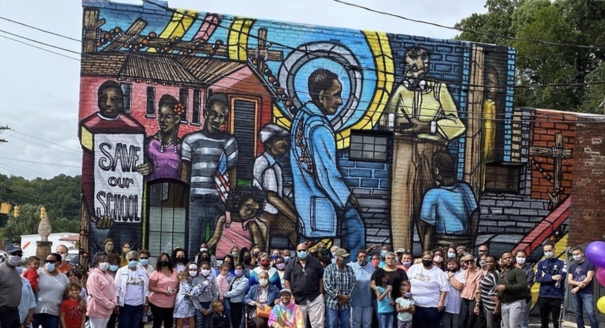

Old Fort Together
Celebrating Old Fort’s struggle for racial justice

In 2020, People on the Move in Old Fort gathered a group of community members to produce a mural in the center of town, honoring local history that contributed to our national struggle for civil rights. The mural was painted by artist Don Rimx in the fall of 2020, and a short documentary about the project was released in early 2021, produced by John Kennedy and David Saich.
The mural
The mural depicts two scenes from Old Fort’s effort to fight racial injustice.
The left side of the mural is based on a photograph of Black school children marching on Main Street to protest the closure of their beloved school, which they called the “Step School,” in September 1950.
The right side is based on an event five years later, in September of 1955: Mr. Albert Joyner, Sr. accompanied Black school children to request to integrate the all-White school.